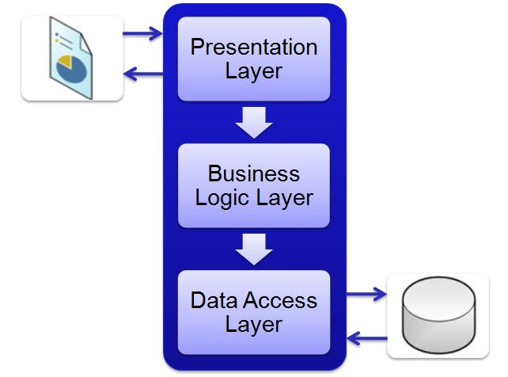

Het drielagenmodel is een manier om software en hardware op te delen in drie delen, zodat het systeem makkelijker te begrijpen en te beheren is. Deze drie delen noemen we lagen: de toepassingslaag, de logische laag, en de fysieke laag. Elk van deze lagen heeft een eigen taak.

Hieronder een voorbeeld van een drielagenmodel bij mijn eigen telefoon(Iphone 12).